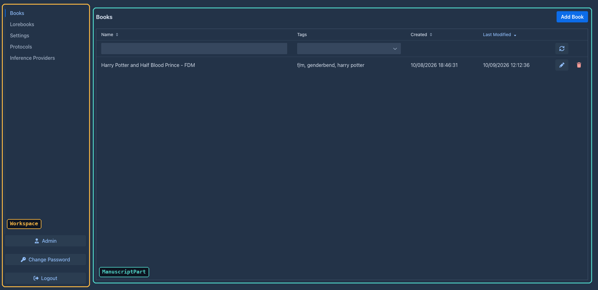
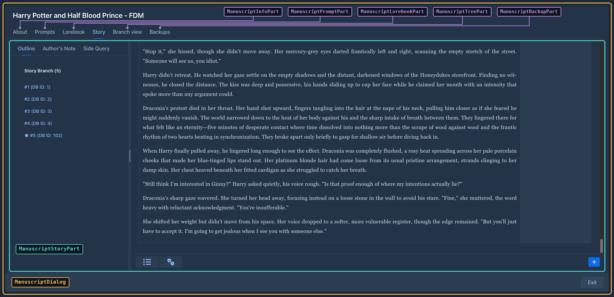

Architecture
Marginalia is one Java web application running in one JVM. There is no separate frontend project, no REST API and no external database: the browser shows Vaadin components that live on the server, the components call Spring services, and the services store everything in a single SQLite file. Story generation runs on background threads that talk to an OpenAI-compatible HTTP API and push the text to the browser as it arrives. Extensions are OSGi bundles loaded into the same JVM; they change the UI by hooking into methods of instrumented classes.
flowchart LR
Browser["Browser<br/>(Vaadin client)"]
subgraph JVM["Servlet container (Jetty 12 / Tomcat 11)"]
direction TB
Servlet["MarginaliaServlet<br/>(VaadinServlet)"]
UI["UI components<br/>routes, workspace, dialogs<br/>@Configurable, @Extendable"]
Services["Spring services<br/>domain/service"]
Gen["Generation engine<br/>pipeline steps on<br/>generation threads"]
Repos["Repositories<br/>JPA / Hibernate"]
OSGi["Apache Felix<br/>extension bundles"]
Agent["ByteBuddy agent<br/>instruments @Extendable"]
end
DB[("~/.marginalia/<br/>marginalia.sqlite")]
LLM["OpenAI-compatible API<br/>OpenAI, OpenRouter,<br/>llama.cpp, ..."]
Browser <-- "HTTP + push WebSocket" --> Servlet
Servlet --> UI
UI --> Services
Services --> Repos --> DB
Services --> Gen
Gen -- "streaming chat completions" --> LLM
Gen -. "chunks via UI.access + push" .-> UI
OSGi -- "decorators" --> UI
Agent -. "rewrites bytecode" .-> UIDesign in brief
-
Server-side UI. Vaadin Flow keeps the component tree on the server; the browser renders it and sends events back. UI code is ordinary Java that calls services directly - there is no API layer to keep in sync.
-
Spring without Spring Boot. The application context is built from XML files; services and repositories are explicit beans. Vaadin components are created with
newand get their dependencies through AspectJ-woven@Configurable. -
One file of data. SQLite in WAL mode, schema managed by Flyway, mapped by Hibernate. Backing up an installation means copying one folder.
-
Multi-user, single process. Every entity belongs to a user; services filter by the user of the current HTTP session. All users share one JVM and one database.
-
Pipeline generation. A story part is generated by a fixed sequence of steps with events between them, so extensions can inspect or change the prompt, the lore and the result.
-
Runtime extensions. OSGi bundles can be loaded and unloaded without a restart. The UI classes they extend are instrumented at startup so that any of their methods can be decorated.
Runtime and deployment
The build produces one WAR. It is deployed in a different container depending on how Marginalia is run, but the code is the same everywhere:
DesktopLauncher (marginalia/src/desktop/java) depends on the JDK only: it prepares a Jetty base in
~/.marginalia/desktop/, starts Jetty's start.jar by reflection in the same JVM, opens the browser and shows the tray
icon. It is compiled separately and never ends up in the WAR. See Packaging & releases.
Startup
sequenceDiagram
participant C as Servlet container
participant W as WebappApplicationInitializer
participant S as Spring root context
participant F as Felix (OsgiServiceImpl)
participant V as MarginaliaServlet
C->>W: onStartup (Spring's ServletContainerInitializer)
W->>S: XmlWebApplicationContext(application-config.xml)
Note over S: Configuration: data folder, pending database restore, copy before a migration
Note over S: dataSource → Flyway migrate → EntityManagerFactory (validate)
Note over S: repositories, services, generation steps
Note over S: ApplicationInitializer, RuntimeInstrumentationInitializer (agent)
S->>F: ContextRefreshedEvent → start framework, install JARs from extensions/
F->>F: each bundle's MarginaliaExtension.onExtensionLoad
C->>V: load servlet (@WebServlet "/*")
V-->>C: Vaadin ready, routes "/" and "/view"-
The container finds Spring's
SpringServletContainerInitializer, which callsui/main/WebappApplicationInitializer. It creates anXmlWebApplicationContextfromMETA-INF/spring/application-config.xmland registers theContextLoaderListener, theRequestContextListener(makes request and session scoped beans work) and theSessionTrackingListener(feeds HTTP sessions to theSessionManager, seeSessions ). -
application-config.xmlloadsconfig/configuration.properties, the build info andgit.properties, enables annotation config,@Configurable(context:spring-configured),@Async/@Scheduled(task:annotation-driven) and AspectJ auto-proxies, scanscom.github.enercciofor components, and imports three files: -
Configurationresolves the data folder (<user.home>/.marginalia) and creates its subfolders. When the data source asks for the database URL (configuration.resolveDb(...)), a staged database restore (marginalia.sqlite.restore) is swapped in first - a restore can't replace a database that is open. Then a copy of an existing database that is behind the bundled migrations is saved indb-backups(pre-migration-*, see Startup). -
Flyway migrates the schema (
classpath:migration), then Hibernate builds theEntityManagerFactorywithhbm2ddl.auto=validate. A mismatch between entities and schema stops the startup here. -
RuntimeInstrumentationInitializerinstalls the ByteBuddy agent and registers a transformer for all classes annotated@Extendable(seeExtensions ). Classes already loaded are retransformed. -
When the root context is refreshed,
OsgiServiceImplstarts Apache Felix with~/.marginalia/extensionsas its storage, installs and starts every JAR in that folder and callsonExtensionLoadon each registeredMarginaliaExtension. A JAR that fails is logged and skipped. When the root context closes, the extensions are unloaded and the framework is stopped. -
MarginaliaServlet(@WebServlet("/*"), aVaadinServlet) serves the UI.AppShellConfigconfigures the page: push enabled, dark Lumo theme,shared-styles.css.
Layers and packages
All application code is in com.github.enerccio.marginalia (marginalia/src/main/java/...):
The UI depends on services, services on repositories, repositories on the entities - not the other way round. UI classes may read entities directly (they are detached JPA objects), but all changes go through services. Project structure lists the files in detail.
Spring wiring
Services and repositories are declared in services-config.xml, one repository bean per entity injected into its
service:
<bean id="manuscriptRepository" class="...repository.impl.JpaManuscriptRepository">
<property name="entityManager" ref="em"/>
</bean>
<bean class="...service.impl.ManuscriptServiceImpl">
<property name="repository" ref="manuscriptRepository" />
</bean>Inside the services, other beans are @Autowired by interface. A new service needs a bean definition here - the
component scan doesn't pick up the service implementations.
UI classes are not Spring beans. They are created with new (new ManuscriptDialog(...)) and annotated
@Configurable (most with preConstruction = true, so fields are injected before the constructor body runs). The
AspectJ compiler weaves AnnotationBeanConfigurerAspect into them, which autowires their fields from the root
context. This only works for classes compiled by ajc - see AspectJ weaving.
Transactions use the common transaction manager (JpaTransactionManager) and are applied by Spring's CGLIB
proxies around the service beans (tx:annotation-driven, proxy-target-class="true") - so only calls that come
through a bean reference are transactional, not calls of a service to its own methods (see
Services). Service methods are annotated with the meta-annotations from domain.traits:
The current user is the session-scoped bean user (User behind a scoped proxy). After login, Main copies the
logged-in user's id, login and name into it; services inject User and use it to set and check ownership
(OwnedService.findAllForUser(), findForUser(uuid)). Code running outside a request (generation threads) needs the
request attributes copied over - see
Configuration comes from src/main/webapp/config/configuration.properties:
User interface
flowchart TB
Main["Main (route /)<br/>LoginCheckRoute"] --> WS["Workspace"]
Viewer["Viewer (route /view)<br/>read-only published books"]
WS --> MP["ManuscriptPart<br/>Books"]
WS --> LP["LorebookPart"]
WS --> UP["UserPart<br/>Settings"]
WS --> PP["ProtocolPart"]
WS --> AP["AIPart<br/>Inference Providers"]
WS --> RP["ResourcesPart<br/>Resources"]
WS --> TP["TrashPart<br/>Trash"]
WS --> AdP["AdminPart<br/>Users, Backups, Cleanup, Extensions"]
MP --> MD["ManuscriptDialog<br/>(book window)"]
MD --> Story["ManuscriptStoryPart"]
MD --> Tree["ManuscriptTreePart"]
MD --> Info["ManuscriptInfoPart"]
MD --> Prompt["ManuscriptPromptPart"]
MD --> Lore["ManuscriptLorebookPart"]
MD --> Backup["ManuscriptBackupPart"]-
Mainshows the login (or the create administrator dialog on an empty installation), restores a saved login from cookies, and after login replaces its content with theWorkspace. -
Workspaceholds the left-hand tabs. Each tab is aWorkspaceComponent(create,refresh,onTabSwitched,onTabClosed). -
Opening a book opens
ManuscriptDialog, whose tabs areManuscriptDialogParts. The story editor (ManuscriptStoryPart) is the largest UI class: the parts sidebar, the text, the instruction panel, generation. -
Vieweris a separate route for reading published books without the workspace.


Most of these classes are @Extendable, which is what makes them extension points. See
User interface for details.
Data
classDiagram
class BaseEntity {
Long id
String uuid
boolean deleted
Date creation
Date modification
}
class OwnedEntity {
User owner
}
class ExtendableEntity {
byte[] extendedContent
String _fulltext
JsonObject attributes
}
BaseEntity <|-- OwnedEntity
OwnedEntity <|-- ExtendableEntity
ExtendableEntity <|-- Manuscript
ExtendableEntity <|-- ChatMessage
ExtendableEntity <|-- Lorebook
ExtendableEntity <|-- LorebookEntry
ExtendableEntity <|-- AI
ExtendableEntity <|-- Protocol
ExtendableEntity <|-- Summary
ExtendableEntity <|-- Tag
ExtendableEntity <|-- SettingAll data entities extend ExtendableEntity. User extends BaseEntity directly and Resource is an OwnedEntity.
-
Every entity has a numeric
id(database key) and auuid(stable identity used in URLs, backups and exports). -
Deleting is soft by default (
deleted = true); the admin Cleanup page purges deleted rows that nothing references any more, following the@CleanupReferenceannotations. -
OwnedEntity.ownerties data to a user.ExtendableEntity.attributesis a JSON object, stored serialized inextendedContentbyExtendableEntityListener, where extensions keep their own data (and where@ExtendedAttributefields of the entity are stored) - so that data travels with backups and exports without schema changes. The same listener fills_fulltextwith the text of the@Fulltextablefields, for searching. -
The story is a tree of
ChatMessages (parts): regenerate, swipe and branch create siblings; the book remembers the active leaf.
The database is SQLite in WAL mode (busy_timeout=10000), through a commons-dbcp pool and a
TransactionAwareDataSourceProxy. Flyway migrations in src/main/resources/migration/ create and upgrade the schema,
and every entity is listed in src/main/webapp/config/persistence.xml (exclude-unlisted-classes).
SaneSQLiteDialect adapts Hibernate's community SQLite dialect. See Domain model and
Database & migrations.
Generation
StoryGenerationService.generateNextTurn(manuscript, input, request, listener) starts generating a part and returns a
CancellationToken right away. The work is done by a GenerationEngine that runs the installed steps one after
another on a cached thread pool (Generation thread NNN):
Between and inside the steps the engine emits Events (BEFORE_PROCESS_LOREBOOK, AFTER_PREPARE_PAYLOAD,
CHUNK_RECEIVED...). Listeners registered with addEventListener run in a chain and can change the engine's data or
stop the chain; this is how extensions take part in generation. The UI follows progress through the
GenerationListener it passed in (onNodeCreated, onResponseChunk, onComplete, onError...). Cancelling, an
error or an interrupted thread jump straight to CLEANUP.
Prompts are Handlebars templates rendered by TemplateService;
SillyTavern macros ({{user}}, {{getvar::x}}, {{random::a::b}}...) are translated to Handlebars helpers by
MacroTranslator first. Inference goes through InferenceServices, which picks the implementation for the provider
type - today only OpenAICompatibleInferenceService (openai-java). Token counts come from TokenizerService, which tries the
TokenizerStrategy implementations in turn (OpenAI SDK, llama.cpp and LiteLLM tokenize endpoints, JTokkit as the local
fallback) and remembers the first one that works for each provider.
See Generation pipeline and Templating & macros.
Threads and push
Vaadin UI state may only be changed while holding the session lock. Code on other threads - generation, backups,
summaries - updates the UI with ui.access(...), and the change reaches the browser through server push
(@Push on AppShellConfig, WebSocket with long-polling fallback). Two helpers make this safe:
UIPushGuard.push(ui)pushes explicitly but never re-entrantly from the same thread.ThreadAccessDialog(andProgressBarDialog) run a task on a worker thread and route its UI updates throughui.access.
Background threads have no HTTP request, so session-scoped beans (the current user) would not resolve.
generateNextTurn therefore captures the request attributes in a ThreadCopyRequestAttributes and the engine wraps
its work in ThreadCopyRequestAttributes.InRequestScope, which makes the session of the user who started the
generation current on the worker thread.
Sessions
bound/SessionManager (bean sessionManager, defined in container-config.xml) knows every HTTP session of the
application and which user is logged into it.
sequenceDiagram
participant C as Servlet container
participant L as SessionTrackingListener
participant M as SessionManager
participant R as LoginCheckRoute
C->>L: sessionCreated
L->>M: onSessionCreate → new SessionInformation
R->>M: userLoggedIn(user, VaadinSession) after login
Note over M: binds user, Vaadin session, main UI, request attributes
loop every DEAD_SESSION_CHECK_TIMEOUT / 10
M->>M: close UIs without heartbeat, invalidate sessions with no open UI
end
C->>L: sessionDestroyed (logout, timeout, invalidate)
L->>M: onSessionDestroy → SessionCloseListeners of the other sessions-
Tracking.
SessionTrackingListeneris anHttpSessionListenerregistered inWebappApplicationInitializer; it looks the bean up in the root context and callsonSessionCreate/onSessionDestroy. Each session gets aSessionInformation. After a successful loginMainandViewercalluserLoggedIn(user, VaadinSession), which fills it in once: the Vaadin session, the user, the current UI as the main UI and aThreadCopyRequestAttributescopy of the request. Note that login callsVaadinService.reinitializeSession- the old session is destroyed and a new one created, so the bound session is the new one. -
Running code in other sessions.
runForUsers(test, runnable, uiBound)runs aRunInSessionfor every session whose user matches the predicate, with that session's request attributes in scope (so the session-scopeduserresolves to that user). WithuiBoundthe runnable is queued withVaadinSession.accesson a live UI of the session (the main UI, or any other open one if it was closed) - it runs asynchronously, once the session lock is free, and changes are pushed when the lock is released. The sessions are processed on a separate thread (ThreadUtils.executeInThread), so the caller's Vaadin and request thread locals don't leak into them; the call waits for the dispatch, not for the queuedaccesstasks. TheskipCurrentoverload leaves out the caller's own Vaadin session.UserServiceImpl.changePassword/clearPassworduse it to invalidate the other sessions of the user whose password changed - a user changing their own password stays logged in in the current session. -
Open UIs. After login
MainandViewerregister their UI inApplicationPoint(beanapplicationPoint) with the workspace (Mainonly) and a copy of the user.SessionInformation.getUI(workspaceClass, applicationPoint)/getWorkspace(...)find the session's UI showing a given workspace type. -
Dead UI detection.
SessionManageris also a daemon thread (Inactive session watcher), started byafterPropertiesSetand stopped on context shutdown. EveryDEAD_SESSION_CHECK_TIMEOUT / 10seconds (seeConstants) ittryLocks each logged-in session - a locked session is in use and skipped - and closes UIs whose last heartbeat is older than the timeout. Threads queued on the session lock count as activity. The timeout is never shorter than three Vaadin heartbeat intervals (5 minutes by default), otherwise an open but idle tab would be closed between two heartbeats. When every UI of the session is closing, the HTTP session is invalidated. -
Close notifications.
addSessionCloseListenerregisters aSessionCloseListeneron the current session. When another session is destroyed, every listener of every remaining session is called inside its own session'saccessand request scope with theSessionInformationof the closed session. -
getActiveUsers(),getOpenedSessions(user),getSessionInformation(id)andgetActiveSessionIds()expose the registry, e.g. for admin views.
Extensions
sequenceDiagram
participant P as Plugin bundle
participant E as ExtensionService
participant C as @Extendable class (instrumented)
P->>E: registerDecorator(decorator, className, methodName)
Note over C: later, a user opens a book
C->>E: onExtendableMethodEnter(context with arguments)
E->>P: decorator.onMethodEnter(this, context)
Note over C: original method body runs,<br/>local variables recorded in context
C->>E: onExtendableMethodLeave(context, thrown)
E->>P: decorator.onMethodLeave(this, context, thrown)-
Loading. Extensions are OSGi bundles run by an embedded Apache Felix framework (
OsgiServiceImpl). Boot delegation is open for all packages (org.osgi.framework.bootdelegation=*, parent = the framework's class loader, which is the web application's), so bundles see the application's classes and libraries directly without importing them. A bundle registers aMarginaliaExtensionservice; Marginalia callsonExtensionLoad/onExtensionUnloadand passes theExtensionService. Before an extension is started,ExtensionService.verifyExtensionchecks the classes, methods, arguments, locals and fields its decorators use against the running application (the result is kept inname.valid/name.invalidnext to the JAR); an extension that doesn't fit is not started. -
Instrumentation. At startup a ByteBuddy agent rewrites every non-static, non-constructor method of each class annotated
@Extendable:ExtendableMethodVisitoradds a call toExtensionService.onExtendableMethodEnterat the start, records each local variable as it is stored, and callsonExtendableMethodLeaveon every return and throw. This happens on every call, with or without decorators, so@Extendablebelongs on UI classes, not on hot code. -
Decorators.
ExtensionService.registerDecorator(decorator, className, methodName)attaches code before and after a method. Through theExtendableMethodContextit can read the method's arguments, read local variables by name (for example the menu the method just built, to add an item to it) and access fields and methods reflectively. On enter it can replace arguments; it can't change the return value or skip the method. -
Data. Extensions keep their data in the
attributesof existing entities, so no schema changes are needed and the data is part of backups. They can also listen to generation events and take part in cleanup (CleanupService.registerContributor). -
UI lifetime. An extension registers the components it adds with
OsgiService.bindAttachableComponenttogether with a callback that removes them; the callbacks of components still attached run when the extension is unloaded, each insideui.access(...)of the component's UI.
Because hooks are attached by class and method name and read local variables by name, extensions are tied to one version of the application. See Plugin development.
Files on disk
Everything is in <user.home>/.marginalia/ (see also The data folder):
Localization
All UI texts are looked up through the Localization bean by an L key (loc.getValue(L.LABEL_SAVE)).
LocalizationEN holds the English texts and is selected by the localization property; another language is a new
Localization implementation and a changed property. Texts of template variables and macros (the hints shown next
to prompt fields) are localized the same way.